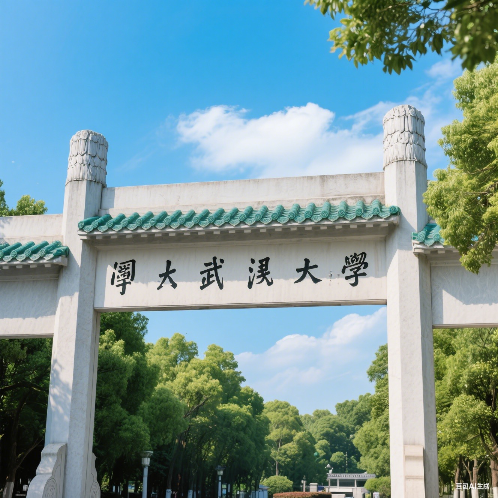

徐定坤 (Xu Dingkun)
生物化学与分子生物学硕士 | AI技术应用探索者
一位积极主动、充满抱负的武汉大学硕士研究生，在生物化学与分子生物学领域拥有扎实的基础。具备出色的组织领导能力，曾多次担任班长。抗压性强，能够独立负责并完成复杂的科研项目。致力于将计算机视觉(CV)和自然语言处理(NLP)等前沿技术应用于解决实际问题，渴望在充满挑战的岗位上创造价值。
联系方式:
电话: 150-3766-9832
邮箱: 2022202040114@whu.edu.cn